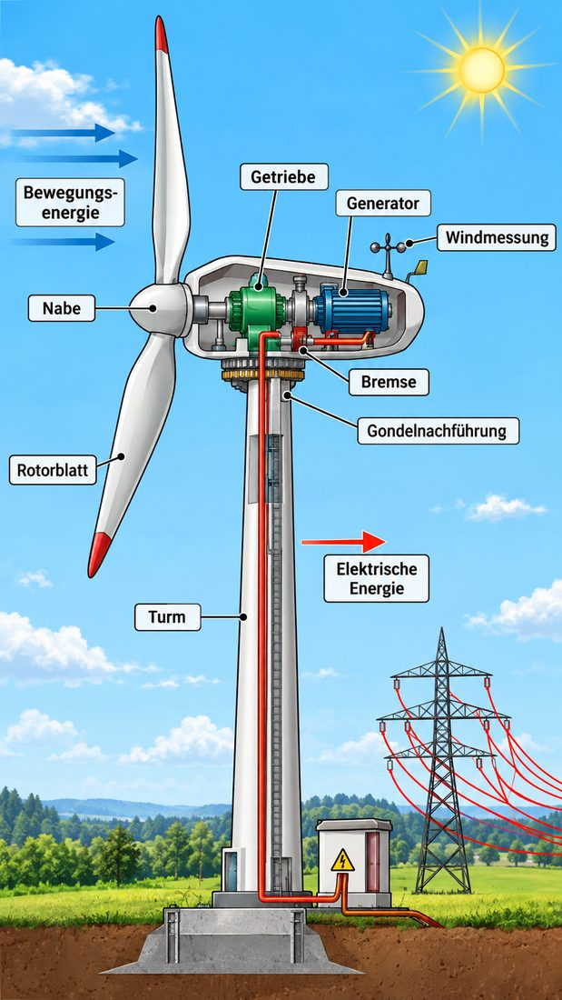
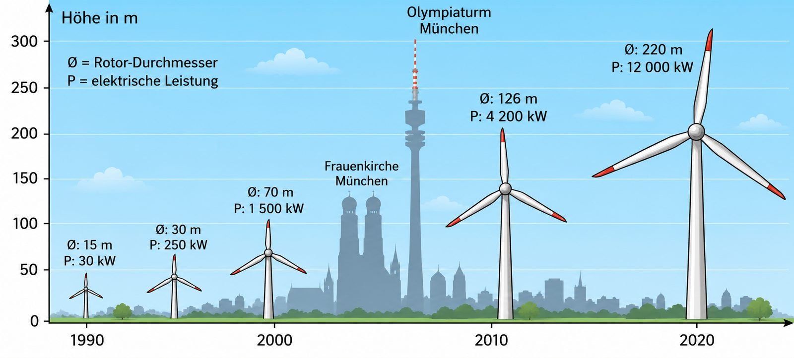

Wind nutzen – früher und heute
gibt es wahrscheinlich schon seit einigen tausend Jahren.
Wie bei Wassermühlen konnte man damit vor der Erfindung des Motors Arbeit verrichten lassen. Die Bewegung der Flügel wurde rein mechanisch über Riemen und Scheiben auf einfache Maschinen übertragen. In den Mühlen hat man so zum Beispiel Getreide gemahlen.
Die heutigen machen etwas anderes: Sie wandeln die des Windes in um – also in Strom.
Schiebe den Regler: Beide Anlagen nutzen denselben Wind. Was machen sie daraus?
Woher kommt der Wind? – Windenergie kommt von der Sonne
Wind entsteht, wenn Luftmassen unterschiedlich warm sind. Die Sonne erwärmt das Land schneller als das Meer. Über dem warmen Land steigt die warme Luft nach oben. Vom kühleren Meer strömt Luft nach – es weht Wind.
Den Wind verursacht also die Sonne. Windenergie ist eine indirekte Form von Sonnenenergie. Da der Wind nicht „verbraucht“ wird und immer wieder neu entsteht, ist er eine .
Tippe auf „Sonne an“ und beobachte die Luft.
So ist eine Windkraftanlage gebaut
Tippe auf die leuchtenden Punkte. Du lernst jedes Bauteil kennen. Rotorblatt, Getriebe, Generator und Bremse musst du für die Probe im Bild finden können.

Wähle einen Punkt im Bild aus.
0 von 10 entdeckt
Oben auf dem sitzt die . Das ist das „Maschinenhaus“ mit Getriebe, Generator und Bremse. Vorne ist der befestigt: die mit den drei .
MERKE
- Der Wind dreht die Rotorblätter.
- Das Getriebe macht die langsame Drehung schneller. Der Generator erzeugt daraus elektrische Energie.
- Weht der Wind zu stark, blockiert eine Bremse den Rotor.
Vom Wind zum Strom
In der Windkraftanlage wird Energie .
- Wenn Wind auf die Rotorblätter trifft, dreht sich der Rotor um seine Achse.
- Die Bewegungsenergie des Windes wird so in eine Drehbewegung umgewandelt.
- Eine überträgt die Bewegung über das auf den .
- Wie ein erzeugt der Generator daraus elektrische Energie.
- Ein wandelt den Strom um. Dann wird er in das eingespeist.
Schiebe den Wind-Regler in der Animation. Achte auf die Energiekette darunter. Probiere auch die Bremse aus.
Der Generator funktioniert wie ein Fahrrad-Dynamo
Am Fahrrad drückt der an den Reifen. Dreht sich das Rad, dreht sich auch das kleine Rädchen im Dynamo. Darin dreht sich ein Magnet in einer Drahtspule. So entsteht Strom und die Lampe leuchtet.
Im Generator der Windkraftanlage passiert dasselbe – nur viel größer. Statt deiner Beine treibt der Wind die Drehung an.
Tritt in die Pedale! Tippe schnell hintereinander auf den Knopf.
MERKE
- Windkraftanlagen nutzen die Bewegungsenergie des Windes.
- Sie wandeln sie in elektrische Energie um: Wind → Rotor → Getriebe → Generator → Stromnetz.
Warum werden Windräder immer größer?
Windkraftanlagen werden heute größer und höher gebaut als früher. Dafür gibt es zwei Gründe:
1. Ein großer Rotor fängt mehr Wind ein. Die Rotorblätter überstreichen eine Kreisfläche. Je größer der ist, umso mehr Energie aus dem Wind kann er aufnehmen – und umso mehr elektrische Energie kann die Anlage erzeugen.
2. Oben weht der Wind stärker. Am Boden bremsen Häuser, Bäume und Hügel den Wind. In 100 oder 150 Meter Höhe weht er stärker und gleichmäßiger als nah am Boden.
Wähle ein Jahr. Vergleiche Größe und mit der Frauenkirche (99 m) und dem Olympiaturm (291 m) in München.

Die Gondel dreht sich in den Wind
Damit der Wind den Rotor optimal trifft, kann die Gondel in Windrichtung gedreht werden. Die auf dem Dach misst Windrichtung und Windstärke. Ein Motor dreht dann die Gondel ().
Weht der Wind zu stark, blockiert eine den Rotor. So wird die Anlage nicht beschädigt.
Du siehst die Anlage von oben. Lass den Wind drehen oder zum Sturm werden.
MERKE
- Je größer der Rotor ist, umso mehr elektrische Energie kann eine Anlage erzeugen.
- In großer Höhe weht der Wind stärker als nah am Boden.
Training für die Probe
Beschrifte die Windkraftanlage
a) Trage den Pfeil „Bewegungsenergie“ ein. b) Trage den Pfeil „Elektrische Energie“ ein. c) Ergänze: Generator – Getriebe – Bremse – Rotorblatt. Achtung: Zwei Begriffe gehören nicht ins Bild.
Vervollständige den Text
Tippe zuerst auf eine Lücke, dann auf das passende Wort.
Vom Wind zum Strom: Bringe die Schritte in die richtige Reihenfolge
Welches Bauteil hat welche Aufgabe?
Rund um die Windkraftanlage
Tippe in ein Kästchen und schreibe. Tippst du ein Kästchen zweimal an, wechselt die Richtung. Schreibe ä als AE, ö als OE, ü als UE.
Kreuze an
Erkläre in eigenen Worten ✨ KI prüft
Schreibe ganze Sätze oder Stichpunkte. Die KI achtet nur auf den Inhalt, nicht auf die Rechtschreibung. Danach kannst du die Musterlösung ansehen.
Windkraft-Profi-Check
Wortspeicher
Alle Fachbegriffe dieses Moduls auf einen Blick.
Wie geht es weiter?
Im nächsten Modul geht es um die Frage: Windkraft – pro und contra. Soll man Windräder bauen? Du lernst, Argumente abzuwägen.